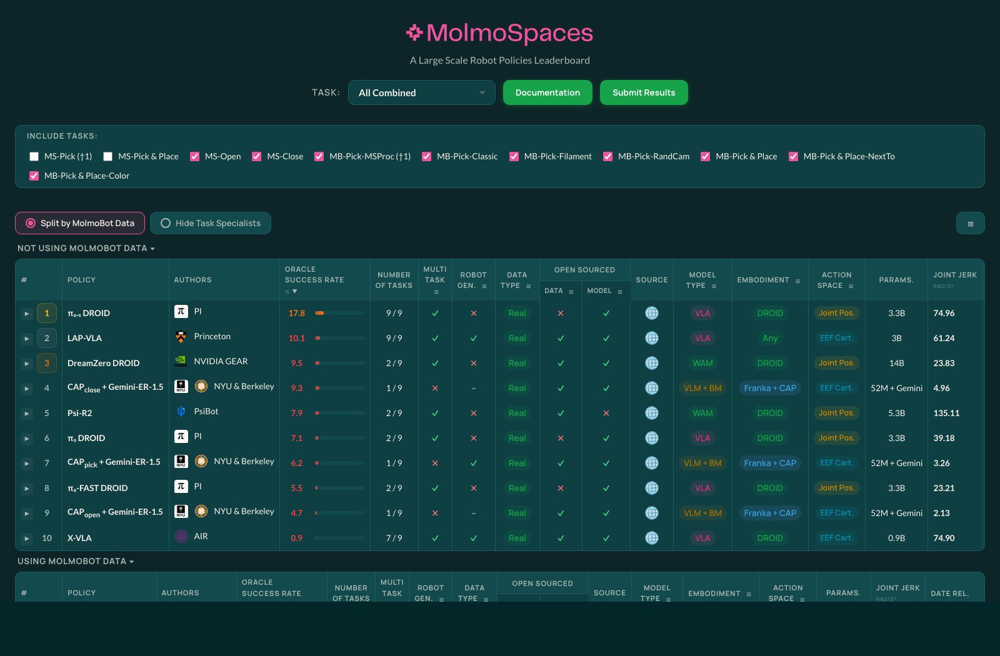

机器人竞技排名榜单
MolmoSpaces Leaderboard
跟踪机器人策略在大规模仿真与真实迁移相关任务上的竞争表现，用来补充论文阅读之外的实证坐标。
- 关注 VLA、WAM、VLM+BM 等路线在同一榜单里的相对位置。
- 优先记录任务覆盖、是否使用 MolmoBot 数据、是否开源、参数量和动作空间。
- 把榜单中的强模型加入后续 paper ingest 或 baseline 对比队列。
基于 Markdown note 的 typed relations 自动生成。当前版本聚焦 VLA、π 系列、World Action Model 和 Dreamer，把论文定位为端到端多智能体任务规划模型里的执行器、世界模拟器、planner critic、记忆模块或任务分配器。
纵向按论文发表年月排序，但采用压缩时间轴：只给有论文的月份分配主刻度，长空档用 gap marker 标出；同月同领域论文会自动错层，并用细线回连真实月份。
No.1 研究不能只看论文，还要持续看真实榜单、开源基线和可复现实验入口。这里记录值得长期跟踪的机器人排名与评测资源。

跟踪机器人策略在大规模仿真与真实迁移相关任务上的竞争表现，用来补充论文阅读之外的实证坐标。
当前节奏：前两周全员读论文，目标是形成路线判断、论文索引标准和研究问题；暂时不安排复现任务。GenSwarm 已经做过，不再作为当前甘特图任务。 数据源是 team/roadmap.json，后续改排期只需要更新结构化任务。
总工程：研究问题、技术路线、仓库架构与团队节奏
目标不是多收论文，而是让每篇论文都能回答：它在系统里是什么角色、能复用什么、证据强到什么程度、下一步该做什么。
summary / roles / modules / evidence / relations
至少一条 typed relation
能放入我们的模型架构
可转成设计组件
明确知道证据和风险
把论文映射到我们的模型架构：哪些是 executor，哪些是 world simulator，哪些可以作为 planner critic、memory、task allocator 或 baseline。
这里不是普通待办，而是把每篇论文下一步要产出的研究动作显式化：审关系、提能力表、做 baseline、抽系统架构或扩展多智能体 rollout。
把论文中的系统结构拆成可复用模块、接口和实验变量。
把单机器人 world/action rollout 扩展成多机器人联合状态预测。
把单体长期记忆改造成团队共享记忆和本地记忆的同步机制。
抽象 planner-to-executor 接口，定义上下文、约束和失败反馈 schema。
把论文方法整理成可复现实验基线，服务后续模型对比。
把 world model 或 reward 机制映射成 planner critic。
明确高层 planner 如何调用底层 VLA 执行器。
把扩散策略拆成条件输入、动作块生成、去噪采样和滚动执行接口。
把 FM 集群综述拆成路线图：设计器、操作器、验证、安全、端侧部署和数据闭环。
把论文拆成执行器和语义子任务器两个角色。
提取平台能力、成功率、失败类型和预计耗时。
把失败样本、纠错和继续学习整理成恢复闭环。
与 DreamerV3 对比 world model 训练、rollout 和控制接口。
连接语言规划、多机器人代码策略和任务分配模块。
保留为 VLA 路线的根节点和语义 grounding 起点。
只保留与 WAM 生成式世界预测相关的强关系。
保留为动作表示和高频控制接口方案。
比较测试时显式想象、训练期视频建模和直接动作生成的实际价值。
比较自然语言动作、频域动作 token 和连续 flow action expert 的接口取舍。
把人类数据、世界模型评估、失败样本和策略改进整理成可复用数据飞轮。
把 scene graph、instruction encoder、GAT 和 task decoder 拆成可接入多机器人 planner 的模块。
把 3D scene graph pruning、action layer、碰撞风险和 GNN readout 拆成导航策略模块。
把这组论文转成更明确的系统设计动作。
把这组论文转成更明确的系统设计动作。
把这组论文转成更明确的系统设计动作。
把这组论文转成更明确的系统设计动作。
把这组论文转成更明确的系统设计动作。
把这组论文转成更明确的系统设计动作。
把仓库维护拆成可复制的 agent 任务：新增论文、审计关系、精读升级、发现 gap、映射系统设计。prompt 原文放在仓库根目录。
把一篇新论文变成结构化 note、typed relations 和可检索数据。
检查每条边是不是方向正确、类型明确、值得保留。
把 skimmed/read note 升级成能支持系统设计的 deep reading note。
从系统角色和可复用模块里找实验级 research gaps。
把论文图谱转成 General Multi-Agent Task Planning Model 架构草图。
搜索会匹配标题、摘要、作者、机构、方法和标签。
RoboGNN Scheduler 用模仿学习把传统优化器生成的小规模高质量调度数据蒸馏进 GAT + Q network，从而在同构多机器人 ST/SR/TA/XD 调度问题上快速生成接近最优的任务分配与排序。
这篇论文处理的是经典多机器人调度问题：多个机器人要完成一批任务，任务之间有时序约束、等待约束、deadline、地点互斥和 makespan 目标。
用 iTax 语言说，它的问题设定是 SR、ST、TA、XD：每个任务只需要一个机器人，每个机器人一次只做一个任务，任务有时间扩展，并且不同机器人日程之间存在 cross-schedule dependency。论文还假设机器人同构，所以不处理不同机器人能力不同的问题。
传统 MILP / CP / exact solver 能给高质量解，但大规模时太慢；手工启发式更快，但需要领域专家调参。论文的问题就是：能不能让 GAT 从优化器生成的示范解里学一个快速调度策略。
论文提出 RoboGNN scheduler。整体思路是 imitation learning + graph attention network + Q-value decoder。
这篇的设定比较窄：SR、ST、TA、XD，再加同构机器人。它不处理异构能力匹配，也不处理一个任务需要多个不同能力机器人协作的情况。
它也不负责自然语言任务分解、场景 grounding 或底层 VLA/WAM 执行。输入已经是结构化任务图和约束，输出是调度决策。
另外，它的策略本质上是从优化器生成的数据里学 heuristic，因此质量上限和泛化边界会受专家数据分布、目标函数和约束形式影响。
和 CO + GNN Survey 的关系很直接：综述说 GNN 更适合作为组合优化求解流程里的 heuristic guide，而 RoboGNN 是这个判断在多机器人 STN 调度中的具体实现。
和 GMATANN 相比，RoboGNN 更早、更偏同构调度和时序约束；GMATANN 更偏异构 agent-task graph、能力匹配和 RL allocation。两者可以互补：GMATANN 解决“谁能做什么”，RoboGNN 解决“在时序约束下怎么排”。
和 Heterogeneous MRTA RL 相比，RoboGNN 的专家数据来自传统优化器，训练更像 imitation learning；Heterogeneous MRTA RL 更强调端到端 RL 和异构机器人能力。
和 GRID 相比，GRID 负责从自然语言和 scene graph 得到 grounded subtask，RoboGNN 假设这些任务已经结构化好，再做多机器人调度。
这篇提醒我们，General Multi-Agent Task Planning Model 里需要一个明确的 scheduling 层，而不只是 task allocator：
```text
Language / scene graph grounding
-> task graph with temporal constraints
-> capability-aware allocation
-> GAT / solver-guided scheduler
-> VLA / WAM / code policy executor
```
RoboGNN 的可复用点是：把任务 start time、任务依赖、deadline、地点互斥和 partial schedule 都编码进图，再让 GAT 提取时序邻域特征，最后用 Q-value 方式逐步构造 schedule。
对我们的系统来说，它更适合作为 scheduler baseline 或 solver heuristic，而不是完整 planner。
Simple Temporal Network task graph、robot-specific node features、directed weighted GAT、expert-schedule imitation learning、Q-value schedule decoder、opportunistic time rollout。
论文报告 RoboGNN 在 2-5 个机器人、最多 100 个任务的测试问题上，约 90% case 能找到高质量解，并且相比 exact solver 最多快 100 倍。这个证据支持它作为快速调度启发式。
风险是实验证据集中在同构机器人和制造调度式约束。若迁移到异构机器人、动态场景、多任务协作或真实执行失败反馈，需要重新定义 node feature、edge feature 和专家数据生成方式。
这篇论文的核心价值是：把分层 3D Scene Graph 变成机器人导航策略的显式空间记忆，并通过 GNN 在 action node 上做决策，而不是让策略从 RGB 或局部深度图里自己学出场景结构。
机器人导航策略如果只看 raw image、depth 或 2D semantic segmentation，需要自己从低层观测里学出三维结构、拓扑关系、语义关联和历史访问记忆。这个学习负担很重，也不利于泛化到新场景。
论文的问题是：如果机器人已经有一个 3D Dynamic Scene Graph，它能不能直接在这张结构化图上学习导航策略，并利用图中显式的层级信息和访问记忆提升 object search 表现。
作者引入分层 3D Scene Graph 作为导航策略的输入。在执行规划时，系统保留高层 node 信息，例如 room、object、place 等语义和拓扑节点，同时去掉底层 mesh node，避免低层几何过密导致图过大、消息传递低效。
关键预处理是加入一个 action layer。作者在机器人当前位置附近加入 8 个离散 action node，用来表示 8 个方向上的移动候选动作。然后通过避碰算法检查这些动作是否会和场景里的物体 node 或占据区域发生碰撞，把碰撞风险编码进动作节点，从而构成论文图 1(b) 中的 agent-centric DSG observation。
每个 node 会被编码成一个 size=10 的特征向量：
这个充满 10 维特征的 graph 会被送进 GNN 做消息传递。公式 1 中，v_i^t 表示当前中心节点，N(v_i^t) 表示它的邻居节点，y 是前面这组 10 维节点特征。AGG 表示每个 node 都会对邻居 node 的信息做一次聚合，论文里这个聚合过程重复 3 次。
经过消息传递后，每个 action node 已经吸收了周围场景、语义、访问历史和碰撞信息。公式 2 里的 V_a 只收集那 8 个 action node 的特征；然后把这 8 个动作特征拼接起来，输入 MLP 的 READ 模块，最终得到 y_G^t。策略基于这个图级输出选择最终动作，例如前进、左转或右转。
这篇主要处理导航和 object search，不处理复杂操作任务，也不负责从自然语言指令生成子任务。它依赖已有的 3D Dynamic Scene Graph，图构建质量、语义检测和场景更新都会直接影响策略表现。
另外，动作空间被压缩成平台无关的导航动作，例如 go straight、turn left、turn right。这对导航很干净，但还不能直接覆盖机械臂操作、协作搬运或需要精细连续控制的任务。
和 GRID 相比，这篇更早，也更底层：GRID 关注 instruction 如何 grounding 到 scene graph 并生成子任务；3DSG Navigation 关注 scene graph 如何变成 navigation policy 的动作选择。
和 GMATANN 相比，这篇的图是 scene-centric/action-centric，用来做导航动作决策；GMATANN 的图是 task-agent graph，用来做异构多智能体任务分配。
和 CO + GNN Survey 的观点一致，这篇没有让 GNN 脱离结构做纯黑盒决策，而是先把问题设计成一个强结构图：高层 scene graph 保留语义和拓扑，action node 表示候选决策，GNN 负责在结构上做信息聚合和启发式判断。
这篇给我们的启发很直接：多机器人 planner 不应该只维护一个全局任务列表，还应该维护一个可被每个机器人投影成 action candidates 的 3D scene graph。
一个更稳的结构是：
```text
Global 3D scene graph
-> remove low-level mesh nodes
-> keep room / place / object / semantic nodes
-> add per-robot action layer
-> collision check action nodes
-> GNN message passing
-> per-robot action scores
-> multi-agent conflict resolution / task allocation
```
它和 GRID 可以拼在一起：GRID 负责从 instruction 和 scene graph 得到 grounded subtask，这篇负责把 scene graph 和当前机器人状态变成可执行导航动作。
hierarchical 3D scene graph pruning、8-direction action layer、collision-checked action nodes、10D node feature schema、explicit visit memory、3-step GNN message passing、action-node readout policy。
论文在 multi-object search 任务中和常见 visuomotor policy 对比，展示了 3D Scene Graph 表示、层级信息和 explicit memory 对搜索效率和泛化的提升。消融结果也支持 room / object 等高层节点对导航目标选择有帮助。
风险在于实验仍然是导航类任务，且依赖模拟环境和 DSG 构建流程。要用于真实多机器人任务规划，还需要补充动态图更新、跨机器人 map fusion、通信延迟、行动冲突和执行失败反馈。
这篇论文把 GNN 放在高层任务规划和低层 MILP 路由之间：GNN 先估计某个 UAV/UGV 子团队完成某个区域检查任务的耗时，再只把最有希望的分配方案送进低层 MILP 精算，从而避免在推测阶段反复触发昂贵的 MILP。
场景中有多个子任务区域，每个区域内部又是一个异构多机器人路由问题。系统需要从总体机器人队伍中，为每个区域划分一个小团队，例如分配几个 UAV 和几个 UGV 去检查某片区域。
难点在于：要判断某个子团队是否适合某个区域，通常需要求解该区域内部的 routing MILP，才能得到精确耗时。如果高层分配阶段枚举很多子团队-区域组合，每个组合都调用 MILP，规划时间会爆炸。
论文把这个问题整体归为 ST-MR-TA-ID：机器人是 single-task，任务需要 multi-robot，分配是 time-extended，并且区域内部路由存在 in-schedule dependencies。它的高层 GNN 估计部分可以看成 ST-MR-IA 式 coalition formation：先估计“哪个子团队适合哪个任务”。
论文提出一个分层 planner：
这相当于把昂贵的低层 MILP 从“每个候选都算”改成“先用 GNN 估，再只算最有希望的一小部分”。
这篇论文不负责从自然语言中生成任务，也不解决场景语义 grounding。它假设多个区域任务已经给定，并且每个区域能被表示成 routing graph。
它也不直接输出机器人具体路径。GNN 只估计耗时，实际路径仍由低层 MILP 计算。因此它更像 planner 的 cost model / heuristic，而不是完整执行策略。
另外，论文的任务结构是静态 allocation，结论部分也明确说当前 planner 不能处理 routing tasks 之间可能存在的 temporal constraints。要接入更复杂任务图，还需要结合 RoboGNN 这类 STN scheduling 模块。
和 CO + GNN Survey 相比，这篇是一个非常典型的“GNN 作为优化器启发式”的例子：GNN 不取代 MILP，而是估计 MILP 参数，减少高层搜索时的昂贵精算。
和 RoboGNN Scheduler 相比，RoboGNN 学的是给定 STN 后的调度策略；本文学的是给定区域 routing graph 和子团队配置后的耗时估计。前者更像 scheduler，后者更像 cost estimator。
和 GMATANN / Heterogeneous MRTA RL 相比，本文的异构性更明确地体现在 UAV/UGV 子团队数量和区域路由耗时上；它不做端到端 RL 分配，而是用 GNN 辅助 MILP。
和 GRID 相比，GRID 可以把自然语言和场景图转成 grounded subtask；本文接在更后面，回答“哪些机器人子团队去哪个区域，以及这个选择大概要花多久”。
这篇论文对 General Multi-Agent Task Planning Model 的启发很直接：复杂系统里很多候选计划的真实代价都要通过昂贵模拟器、MILP、物理 rollout 或 WAM 预测才能得到，不可能在高层搜索中全部精算。
更合理的结构是：
```text
Language / scene graph grounding
-> area tasks / routing task graph
-> learned subteam performance estimator
-> high-level allocation MILP / scheduler
-> low-level routing MILP / executor
-> true cost feedback to estimator
```
GNN 在这里是“快速代价模型”：先给高层 planner 一个足够好的耗时估计，让 planner 优先探索有希望的子团队划分，再用精确求解器修正估计。
subteam performance estimator、area inspection graph、UAV/UGV team encoding、learned makespan estimator、lazy MILP refinement、hierarchical task-routing planner。
证据强在任务形式和我们关心的多机器人子团队划分高度贴近：多区域、多机器人、异构 UAV/UGV、makespan 目标、MILP 低层求解。实验表明 GNN 估计器相比 greedy 和 MILP relaxation 在多类环境中有较好的质量-速度折中。
风险是它依赖区域图和固定机器人类型，且训练目标是估计特定 routing MILP 的耗时。换成真实动态场景、更多机器人类型、通信限制、任务时间窗或执行失败反馈后，需要重新设计 graph feature 和反馈机制。
DayDreamer 把 Dreamer 式 world model 学习带到真实机器人，强调从少量真实交互中学习行为。
机器人能否通过在线真实经验和 world model，在样本效率更高的情况下学习多个物理任务。
论文基于 Dreamer，在真实机器人上学习潜在世界模型，并通过模型预测训练策略。
任务规模和复杂度仍远小于真实多机器人任务规划。论文不处理语言指令、任务分配或多主体通信。
DayDreamer 是 Dreamer 到机器人现实交互的桥。π*0.6 也强调从真实经验中改进，但采用的是 VLA + correction/RL 的路线。
多机器人系统可以让每个机器人维护自己的局部 world model，同时把执行经验汇总到共享能力库，服务于后续任务分配。
latent world model、online adaptation loop、imagination rollout。适合迁移到“任务分配方案的短期后果预测”和“失败后快速再规划”。
证据来自真实机器人在线学习，但任务规模和多主体交互都有限。迁移到多机器人时，最大的风险是联合状态维度和通信延迟。
DreamerV3 是 world model RL 的重要基线：先学环境模型，再在想象轨迹中优化行为，并在 Nature 版本中展示了跨多控制域和 Minecraft 长程任务的泛化能力。
能否用一个相对统一的模型化 RL 算法，在很多差异很大的控制任务上减少人工调参并保持稳定学习，甚至从零开始完成 Minecraft 挖钻石这类长程稀疏奖励任务。
Dreamer 学习潜在状态空间中的世界模型，用该模型预测未来并在 imagined trajectories 上训练 actor-critic。Nature 版本强调同一套算法在固定超参数下覆盖连续控制、离散控制、视觉输入、低维输入和 Minecraft 等多种环境。
DreamerV3 的核心评测不针对语言任务，也不直接解决机器人多智能体协同。它能做强控制学习，但还没有处理自然语言任务分解、异构机器人能力约束、通信和联合调度。
DayDreamer 把 Dreamer 类方法带到真实机器人在线学习；DreamZero 则借视频扩散模型把 world model 推向 zero-shot policy。对你的路线来说，DreamerV3 / Nature 版本是“world model 可以做长程控制推演”的核心证据。
对多机器人 planner 来说，Dreamer 的价值是“可学习的任务级 transition model”：可以用来评估分配方案的长期后果，而不只是贪心分配当前任务。Minecraft 技术树式任务也提示，多机器人任务可以被建模为长程状态推进和资源转换过程。
latent transition model、imagination rollout、value model。可作为上层 planner 的 critic，用来评估任务分配、重规划和长期资源转换。
证据强在跨领域 benchmark 和长程控制；风险在于多机器人场景需要显式建模 agent identity、通信动作和局部观测。
Diffusion Policy 把机器人策略从“直接回归下一步动作”改成“条件扩散生成一段连续动作轨迹”，是独立于 VLA 语义路线之外的机器人动作生成根路线，也是后续 flow/diffusion action policy 和 WAM 低层动作生成的重要源头。
传统 visuomotor imitation learning 常把策略写成确定性回归或简单混合分布：输入图像和机器人状态，直接输出下一步动作。这在机器人操作里会遇到三个问题。第一，同一个视觉状态下可能有多种合理动作，比如从左边绕或从右边绕，均值回归会把多峰动作压成一个不可执行的平均动作。第二，复杂操作需要连续、平滑、高维的动作序列，而不是孤立的一步动作。第三，真实机器人控制需要稳定训练和闭环重规划，不能只生成离线轨迹。
这篇论文的核心问题是：能否把扩散模型的强分布建模能力搬到机器人动作空间，让策略学习的是 action distribution，而不是单点动作回归。
Diffusion Policy 的基本设计可以拆成四步。
第一，把动作当成生成对象。模型不是生成图片，而是生成未来一小段动作序列，也就是 action chunk。训练数据来自专家示教轨迹，标签是一段连续的末端位姿、关节或夹爪动作。
第二，对专家动作加噪声。训练时从真实 action chunk 采样一个扩散时间步，把高斯噪声加到动作序列上，让网络在视觉观测、机器人状态和扩散时间步条件下预测噪声或干净动作。这样学到的是条件动作分布 p(action_chunk | observation)。
第三，推理时从噪声里“去噪出动作”。部署时先采样一段随机噪声动作，再经过多步 denoising / Langevin-style refinement，把噪声逐渐变成一段平滑、可执行、符合当前观测的动作 chunk。这个过程可以理解成：策略不是一次性吐出答案，而是在动作空间里迭代优化一个候选轨迹。
第四，只执行前几步，然后重新规划。论文把 diffusion action chunk 和 receding horizon control 结合起来：每次生成一段未来动作，但机器人只执行最靠前的一小段，随后读取新观测再次生成下一段动作。这样既保留了动作序列的时间一致性，又能在执行中对扰动、遮挡和偏差做闭环修正。
架构上，论文强调 visual conditioning 和 time-series diffusion transformer：视觉编码器负责把图像变成条件特征，时序扩散模型负责在动作序列维度上建模多步动作之间的依赖。
Diffusion Policy 主要解决低层连续控制和 imitation learning，不解决高层任务规划、语言分解、多机器人任务分配或世界状态预测。它也不像 DreamZero / WAM 那样显式预测未来视频或世界状态，因此严格说它不是 WAM；它也不是 VLA，因为没有把语言语义作为核心建模目标。更准确的定位是：机器人 Diffusion/生成式动作策略，是 VLA 和 WAM 都可以调用或继承的低层动作生成路线。
扩散采样需要多步去噪，实时性会成为工程瓶颈。后来的 flow matching、consistency、action tokenization、单步生成和缓存优化，本质上都在回答同一个问题：如何保留生成式动作分布的表达能力，同时把推理速度压到机器人闭环控制可接受的范围。
Diffusion Policy 和 RT-2 代表 2023 年机器人策略的两条根路线：RT-2 属于 VLA，核心是把互联网 VLM 知识迁移到离散动作 token；Diffusion Policy 属于 Diffusion 动作生成路线，核心是把连续机器人动作建模成条件生成分布。前者强调语义泛化，后者强调连续控制和多峰动作分布。
π0 把这个思想进一步推广到 robot foundation model：不用扩散而用 flow matching 生成连续 action chunk，但核心问题仍然是如何从视觉语言上下文生成稳定的连续动作段。DreamZero / WAM 则在 Diffusion Policy 的动作生成思想上再往前走一步：不只生成动作，还联合建模未来视频世界状态。Fast-WAM 继续追问测试时是否真的需要显式未来视觉想象，但它仍然继承了“生成式动作模型可以作为机器人策略”的大方向。
对我们的 General Multi-Agent Task Planning Model 来说，Diffusion Policy 更适合放在低层 executor，而不是高层 planner。高层 planner 负责子任务分解、机器人分配、约束和协作时序；每个机器人本地可以用 diffusion policy 接收结构化子目标和局部观测，输出可执行 action chunk。
真正值得借鉴的是接口形式：planner 不应该只调用“下一步动作”，而应该调用“带前置条件、目标、禁区、期望后置状态和失败反馈的 action chunk executor”。如果未来要做 multi-agent diffusion policy，可以把联合动作表示成多个机器人 action chunk 的组合，再加入 collision、resource occupancy 和 communication action 约束。
conditional action diffusion、action chunk diffusion、visual conditioning、time-series diffusion transformer、receding horizon control、multimodal action distribution modeling、Langevin-style action sampling。适合作为多机器人系统里每个机器人本地执行器的动作生成核心，也适合作为后续 WAM action head 的历史源头。
证据强在多个机器人操作 benchmark 和真实任务，且项目页公开代码、数据和训练细节。风险是它没有解决世界模型、任务规划和多智能体协同；如果直接把它当成多机器人 planner，会缺少任务级记忆、角色分配、长期后果评估和失败恢复机制。
这篇 JMLR 综述的核心判断是：GNN 最适合做组合优化和规划求解器里的 heuristic guide，而不是直接替代传统算法独立输出最终方案。
组合优化问题普遍存在于路径规划、任务分配、调度、SAT、MIP 和车辆路径等场景中。传统求解器有可行性和最优性保证，但搜索慢；纯神经网络推理快，但很难保证硬约束和最优性。
论文关心的问题是：GNN 应该如何表示组合优化问题，应该输出什么，以及应该用什么学习范式嵌入到真实求解流程中。
这不是一篇提出单一模型的算法论文，而是一篇结构化综述。它把 GNN for CO 的方法整理成三个关键维度：
最重要的工程判断是：GNN 不应该只被看作一个端到端黑盒，而应该嵌入 Branch-and-Bound、Local Search、MCTS、Beam Search 等传统算法内部，替换其中“凭经验、算得慢”的启发式部件。
综述本身不直接给出一个可复现的多机器人任务规划系统。它也没有解决 VLA/WAM 执行层的不确定性问题。对我们的仓库来说，它更像方法论底座，而不是直接可部署模块。
GMATANN 和 Heterogeneous MRTA RL 都是多智能体任务分配的具体模型；这篇综述提供更上层的组合优化视角，解释为什么 agent-task allocation 可以被写成图、为什么 GNN 更适合作为启发式分配器或求解器辅助模块。
它也能解释 GenSwarm 之后为什么还需要一个结构化 planner：自然语言可以生成任务图，但任务图到机器人分配、路径、调度仍然需要组合优化推理。
我们不应该让 LLM 或 VLA 直接“猜”整个多机器人计划。更稳的架构是：
```text
Language goal
-> task graph / constraint graph
-> GNN heuristic guide
-> search / optimization / scheduler
-> VLA or WAM executor
```
也就是说，GNN 的角色不是输出最终答案，而是给 planner 提供：
bipartite variable-constraint graph、task-agent graph、GNN-guided branching、warm-start assignment、constraint-aware decoding、hybrid solver loop。
证据来自 JMLR 综述和大量 CO/GNN 文献归纳，适合作为方法论参考。风险是综述结论偏通用组合优化，落到多机器人系统时还需要加入实时状态、通信约束、执行失败反馈和 VLA/WAM 成功率估计。
RT-2 把 VLM 的互联网语义知识和机器人轨迹数据共同训练到同一个 token 输出空间里，是 VLA 路线的关键起点。
机器人策略能否直接继承大规模视觉语言模型的语义泛化能力，而不是只在机器人数据中学动作映射。
论文将机器人动作离散化为文本 token，把视觉问答、网页视觉语言任务和机器人轨迹放在同一训练格式中共同微调。
它主要解决单机器人短程操作的语言到动作映射。任务级规划、长时程状态记忆、多机器人资源冲突和协同约束并不是论文核心。
π0 系列延续 VLA 思路，但把动作输出从离散 token 扩展到更适合连续控制的 flow/action chunk。World Action Model 则尝试从“语义泛化”推进到“物理运动泛化”。
RT-2 更适合放在系统底层：每个机器人接收局部语言子任务并执行。多机器人系统还需要上层 planner 处理任务分解、机器人能力建模、通信和失败恢复。
language-conditioned executor、semantic grounding interface、VLA baseline。适合定义“planner 输出语言子任务 -> 本地机器人执行”的接口。
证据强在语义泛化；风险是长程任务、动态环境和多机器人协调能力不足，不能作为完整 planner。
这篇论文是 task graph generation 的直接参考：它从多个 instructional video transcripts 中无监督抽取关键步骤，并推断步骤之间的 precondition dependency graph。
现实任务通常不是一个单步指令，而是由多个 key steps 和依赖关系组成。例如做 CPR 时，检查安全、确认意识、打开气道、检查呼吸、开始胸外按压之间有明确的先后依赖。
问题是这些知识通常只存在于非结构化文本中，比如 how-to 视频的 ASR 转录、教程说明、操作流程描述。论文要解决的是：如何从这些 noisy transcripts 中生成结构化 task graph。
论文的 pipeline 分成五步：
这套方法的关键是：LLM 主要负责从 noisy transcript 中抽 step summary，后面的聚类、排序和 ILP 负责把多个样本合并成更稳定的任务依赖图。
这篇论文不处理 grounding 到真实机器人场景的问题。它能生成 abstract task graph，但不知道哪个杯子、哪张桌子、哪个机器人能执行，也不知道空间约束和执行失败。
输入依赖 instructional transcripts。如果任务没有足够多的说明文本，或者 ASR 噪声很强，key step 聚类和依赖推断会受影响。
此外，生成的 graph 主要表达步骤前置关系，不直接表达资源冲突、时间窗、机器人能力、通信约束或多机器人协作需求。
和 GRID 相比，这篇更靠近上游：它从文本说明生成 abstract task graph；GRID 从 instruction + scene graph 生成 grounded robot subtask。两者可以串起来：
```text
instructional text / demonstrations
-> abstract task graph
-> scene graph grounding
-> robot subtasks
```
和 RoboGNN / MAGNNET / GMATANN 相比，这篇不做 allocation 或 scheduling，而是为它们提供任务依赖图输入。
和 GenSwarm 相比，GenSwarm 更像 language-to-code policy generator；这篇更像 language-to-task-structure extractor。
对 General Multi-Agent Task Planning Model 来说，这篇补上的是最上游的一层：
```text
unstructured instruction / transcript
-> key step extraction
-> task dependency graph
-> scene grounding
-> task allocation
-> scheduling
-> executor
```
如果我们只让 LLM 直接输出机器人动作，很容易丢掉隐含前置条件。Task graph generation 的价值是先把任务结构抽出来，再让后面的 planner 处理机器人、资源和执行约束。
key step extraction、transcript-to-task-graph pipeline、sequence clustering、language-model sequence ranking、ILP precondition inference。
论文在 ProceL 和 CrossTask 上评估，结果显示这种 unsupervised pipeline 可以超过 supervised baseline 和其他 unsupervised baseline。证据说明多个 noisy transcripts 里确实能抽出稳定的任务结构。
风险是这些 benchmark 主要是人类活动/教程任务，不是机器人执行数据。要用于多机器人系统，还需要加入 scene graph grounding、agent capability matching、时间/资源约束和执行反馈。
GRID 的核心价值是：把大场景机器人任务规划从“看一张局部图片再问 LLM”改成“把环境表示成 scene graph，再用 instruction-conditioned GNN 选择与任务相关的物体、关系和动作”。
LLM 做机器人任务规划时，需要同时理解用户指令和环境语义。直接把图片喂给多模态模型有两个问题：第一，图片观察范围有限，容易看不到全局场景；第二，多模态训练成本高，且模型很大。
GRID 关心的问题是：能不能用更结构化、更轻量的 scene graph 表达大场景信息，让机器人根据自然语言指令逐步分解子任务。
论文提出 Graph-based Robotic Instruction Decomposer，也就是 GRID。它的输入包括 instruction、scene graph 和 robot graph，输出是一系列子任务，每个子任务由预定义机器人动作和目标物体组成。
它的关键流程可以拆成四步：
GRID 依赖已有或可生成的 scene graph。如果场景图本身漏检、关系错误或更新不及时，planner 会在错误结构上做推理。
它也不是 VLA 或 WAM 执行器，不负责学习连续控制动作。论文输出的是预定义动作和目标物体，真正执行还需要底层导航、抓取、避障或操作策略。
另外，论文主要验证单机器人任务规划。要用于多机器人系统，还需要加入 agent-agent 关系、能力约束、通信约束、任务分配和冲突消解。
和 CO + GNN Survey 相比，GRID 是一个具体的机器人任务规划实例：综述解释 GNN 适合做结构化推理和求解器辅助，GRID 则把图推理落到 scene graph grounding 与 instruction-driven subtask decoding。
和 GMATANN 相比，GRID 更靠近自然语言和场景语义，负责把 instruction 变成 grounded subtask；GMATANN 更靠近多机器人任务分配，负责在 agent-task graph 上做 allocation。
和 GenSwarm 相比，GRID 可以放在 GenSwarm 前面或旁边：GenSwarm 更像 language-to-code policy generator，GRID 更像 scene-aware task decomposer，负责告诉系统“要操作哪个物体、执行哪类动作”。
如果我们要做 General Multi-Agent Task Planning Model，GRID 提醒我们必须保留一个显式 world / scene representation 层。比较稳的架构是：
```text
Language goal
-> scene graph / object-relation graph
-> instruction-conditioned graph encoder
-> grounded subtask sequence
-> multi-agent task allocation
-> VLA / WAM / diffusion executor
```
也就是说，scene graph 不是一个可有可无的可视化材料，而是 planner 能够严肃 grounding 的中间表示。
scene graph representation、LLM node tokenization、instruction-conditioned GAT、instruction-aware feature enhancer、robot graph + scene graph task decoder。
论文报告 GRID 在 subtask accuracy 上超过 GPT-4 25.4%，task accuracy 上超过 GPT-4 43.6%，并达到 0.11s per inference 的实时推理速度；在 unseen scenes 和不同物体数量场景上，task accuracy 最大下降 3.8%，说明 scene graph 路线有较好的跨场景泛化。
风险在于这些结果依赖数据构造流程、预定义动作集合和 scene graph 质量。对真实多机器人系统来说，还必须验证 scene graph 更新延迟、动态物体、机器人之间的冲突，以及底层执行失败如何反馈给 planner。
Eureka 用 LLM 生成和迭代 reward code，再让 RL 在这些奖励函数下学习技能，是“语言理解 + 优化学习”的典型组合。
低层机器人技能往往需要精细 reward，人工设计成本高且难泛化。论文想回答：LLM 能否根据任务描述和环境代码自动写出接近人类专家水平的奖励函数。
Eureka 把环境源码和任务描述提供给 LLM，让模型生成 reward 函数代码；随后用 RL 训练策略，并把训练表现反馈给 LLM 迭代改进 reward。
LLM 生成 reward 的步骤本身不可微，不能直接作为端到端模型的一部分参与梯度更新。多机器人任务中的协同失败归因也比单体技能 reward 更复杂。
GenSwarm 用 LLM 生成可执行代码策略；Eureka 用 LLM 生成 reward code。两者都把 LLM 放在“可执行结构生成器”的位置，而不是直接作为低层策略。
可以让语义理解模块输出 reward 或 critic 参数，用于训练任务分配模块。多机器人场景中，reward 需要同时考虑 makespan、等待时间、路径冲突、能力匹配和失败恢复。
reward code generator、evaluator loop、language-to-objective translation。可用于给多机器人任务分配方案生成可执行评分函数。
证据来自 reward 生成和 RL 训练闭环；风险是 reward hacking 与环境源码依赖，真实多机器人系统需要安全约束和人工审查。
Pyramidal Flow Matching 用多尺度金字塔式 flow matching 降低视频生成训练成本，是 WAM 做未来视频预测时可借鉴的底层生成技术。
高分辨率长视频生成需要建模巨大的时空空间，训练成本高。论文关注如何在统一模型中更高效地学习视频生成轨迹。
论文把 denoising / flow 轨迹重解释为多个 pyramid stage，低分辨率阶段先建模粗动态，最终阶段再处理完整分辨率，并用统一 DiT 端到端优化。
它本身不是机器人策略论文，也不直接建模 action。要进入机器人任务规划，还需要把视频预测与机器人状态、动作和任务约束对齐。
World Action Models / DreamZero 需要把未来视频和动作关联起来。Pyramidal Flow 更偏视频生成骨干，是 WAM 的底层技能树之一。
多机器人 world action model 可能需要预测较长时间范围内的场景演化。分层/多尺度生成可以先预测粗任务进展，再预测局部机器人交互细节。
pyramidal flow matching、efficient video rollout、video world backbone。主要作为 WAM 的底层视频生成能力，而不是 planner 本体。
证据来自视频生成质量和效率；风险是没有直接验证机器人控制或多机器人任务规划。
π0 的核心是把预训练 VLM 和 flow matching 动作头结合起来，面向跨平台、长程、灵巧操作学习连续动作策略。
通用机器人策略如何同时继承互联网语义知识，并在多种机器人平台和复杂真实任务上输出稳定动作。
模型在预训练视觉语言骨干上添加 flow matching 动作生成结构，训练数据覆盖单臂、双臂和移动操作平台。
论文重点仍是机器人操作执行，不是任务规划算法。它不直接处理多机器人之间的任务分配、队形、通信、协商或冲突消解。
π0 是 π0.5、π0.6、π0.7 的基础。π0.5 强化开放环境泛化，π0.6 和 π*0.6 强调部署与经验学习，π0.7 强调可控上下文和组合泛化。
可以把 π0 视为“技能执行模型”，让上层 multi-agent planner 输出语言或子目标，再由不同机器人实例调用策略执行。
flow action expert、action chunk interface、cross-embodiment policy backbone。适合作为多机器人系统的低层执行器抽象。
证据来自多平台操作任务；风险是 planner 仍需自行处理任务分解、能力约束和机器人间冲突。
FAST 用频域压缩方式对机器人动作序列做 tokenization，让自回归 VLA 能更好处理高频、灵巧、连续控制数据。
朴素逐维、逐时间步动作离散化会让高频动作 token 信息量低、序列长、训练困难。论文想解决 VLA 动作 token 表示效率问题。
FAST 使用离散余弦变换压缩动作时间序列，把连续高频动作转换为更紧凑的频域 token，并发布 FAST+ 通用动作 tokenizer。
FAST 主要优化动作编码和训练效率，不负责高层任务分解、长期记忆或多机器人协作。
相对 RT-2 的直接动作 token 化，FAST 更关注高频连续动作的压缩。π0.5 可被理解为 FAST 式离散动作预训练和 π0 式 flow action expert 的组合。
如果多机器人 planner 需要训练统一执行器，动作 tokenizer 的效率会影响数据规模、推理速度和跨平台泛化。FAST 提醒我们动作接口设计本身就是模型能力的一部分。
DCT action tokenizer、FAST+ tokenizer、high-frequency action compression。适合定义 planner 到 executor 之间的动作表示边界。
证据集中在动作表示效率；风险是它不解决任务分解、记忆、协作或世界预测。
这篇论文用 RL 学习异构多机器人任务分配和调度策略，让机器人根据任务能力需求动态组队，并减少等待和总完成时间。
异构机器人任务往往要求多个具备不同能力的机器人同时到达同一任务点。如何在任务依赖、能力约束和等待成本下快速分配任务。
论文采用全局观测、分布式决策的 RL 框架，用 agent encoder、task encoder 和 cross encoder 学习 agent-agent、task-task、agent-task 关系，再由 decoder 输出任务选择策略。
论文主要处理已经给定的原子任务集合，不负责从自然语言目标中自动分解任务。它也不直接处理 VLA/WAM 执行器的不确定性反馈。
GenSwarm 更关注自然语言到多机器人代码策略的自动生成；本论文更关注给定任务后的异构机器人分配和调度。两者对应 planner 的不同层。
你的系统可以把任务分解和任务分配分成两层：LLM/VLM 负责把目标转为结构化任务图，GNN/Transformer/RL 模块负责在 agent-task 图上做可优化分配。
heterogeneous agent-task graph、RL scheduler、allocation objective。适合作为多智能体任务规划模型的 baseline 和监督信号来源。
证据直接来自多机器人任务分配；风险是语义任务理解和低层执行器接口较弱，需要和 VLA/WAM 结合。
π0.5 关注开放世界泛化，把多任务、网页数据、目标检测、语义子任务预测和 FAST/π0 训练路线合并到 VLA 训练中。
VLA 能否在训练环境之外的真实家庭中完成长程灵巧任务，而不是只在实验室桌面任务上泛化。
模型使用异构任务 co-training，并混合图像观察、语言命令、对象检测、语义子任务预测和低层动作数据。
泛化主要是新环境、新物体和家庭任务层面的泛化，还不是多机器人协同层面的泛化。
π0.5 是 π0 的开放世界扩展，并借鉴 FAST 式动作 tokenization 来提升大规模预训练效率。π0.7 后续用更丰富的上下文条件让模型可被更精细地 steer，减少多策略数据混合造成的平均化问题。
语义子任务预测可以借鉴到多机器人 planner 中：先预测任务分解，再依据机器人能力、位置和负载分派执行。
semantic subtask prediction、open-world VLA training、FAST pretraining + flow expert pipeline。适合做 planner-executor 边界的核心参考。
证据强在开放环境泛化；风险是团队级任务分配、通信、冲突消解仍需外部 planner。
GMATANN 是一篇典型的“GNN 负责表征提取 + RL 负责最终决策”的异构多智能体任务分配论文：它把机器人和任务建成 task-agent graph，用全局-局部注意力提取大局状态，再让强化学习输出具体分配动作。
异构多智能体系统中的任务分配不是简单的分类问题。机器人有不同速度、机动性、电量、通信范围和能力；任务有不同类型、紧急程度、空间位置、先后依赖和资源需求。传统启发式或扁平神经网络很难同时表达 task-agent 匹配、task-task 依赖和 agent-agent 协作关系。
论文的问题可以概括为：如何把复杂多智能体任务分配建成图，并学习一个能感知局部匹配和全局态势的分配策略。
论文提出 Graph Multi-Agent Task Allocation Neural Network，也就是 GMATANN。它可以理解成一个三段式流水线：
图构建是这篇的核心。节点包含两类：
边包含三类：
GNN 在这里不直接做最终分配决策。它的角色是 state representation，也就是把原始环境整理成一张带注意力权重的“情报图”。
它仍然依赖结构化任务输入，不负责从自然语言目标中自动分解任务，也不直接处理 VLA/WAM 执行器的不确定性反馈。RL 的 reward 设计和仿真分布也会影响泛化能力。
另外，它更偏宏观任务分配，不解决低层执行中的 contact-rich manipulation、失败恢复、视觉误差和真实机器人控制接口问题。
和 CO + GNN Survey 相比，这篇是一个具体落地实例：综述讲 GNN 在组合优化中适合做 heuristic guide；GMATANN 则把这个观点落到异构多智能体任务分配。
和 Heterogeneous MRTA RL 相比，GMATANN 更强调 task-agent graph、VAE 特征编码和全局-局部图注意力；Heterogeneous MRTA RL 更强调协作任务中的等待、调度和 makespan 优化。
和 GenSwarm 相比，GMATANN 不负责自然语言到代码策略，也不负责部署；它更适合作为 GenSwarm 后面的可学习任务分配器。
如果我们要做 general multi-agent task planning model，不能只把所有机器人状态拼成一个长 prompt，也不能只靠 LLM 直接输出完整计划。更稳的结构是：
```text
Language goal
-> task graph / constraint graph
-> VAE or encoder for robust state feature
-> GNN global-local attention state representation
-> RL / solver / scheduler allocation policy
-> VLA / WAM / code policy executor
```
在这个架构里，GNN 是“翻译官”和“降维器”：它把战场、仓库、城市或实验室中的复杂机器人-任务关系整理成 planner 能理解的状态图，再让 RL 或优化器做最终分配。
对我们来说，最值得借用的是 task-agent graph + global-local attention + RL allocation head。后续可以把 WAM 预测成功率、通信成本、任务风险和机器人实时状态都作为 edge feature 加进去。
task-agent graph、Time-Series Conditional VAE、global-local fusion attention、graph attention assignment、RL assignment policy、heterogeneous capability matching。
证据直接来自异构多智能体任务分配问题，和我们的多机器人 task planning 很贴近。风险是论文场景仍然偏结构化仿真/任务分配，距离自然语言任务分解、真实机器人执行反馈和端到端 VLA/WAM executor 还有一层系统集成。
MAGNNET 是一个“GNN 做关系编码 + PPO 做分布式决策”的异构 UAV/UGV 任务分配框架：每个 agent 根据本地状态、到任务的代价和 GNN 聚合到的邻域/任务关系，决定是否请求某个任务。
论文解决的是通信受限、动态任务场景里的去中心化任务分配。集中式 Hungarian 方法可以给较优分配，但需要所有 agent 状态持续上传到中心节点；去中心化 greedy 方法更快但容易冲突，多个 agent 可能同时抢同一个任务，或者一些任务没人接。
MAGNNET 想在两者之间取平衡：训练时使用全局 critic 做 centralized training，执行时每个 agent 只用本地 observation 和 GNN message passing 做 decentralized execution。
训练使用 CTDE：
路径代价由 A* / reservation-based planner 计算，冲突时优先保留 task completion cost 更低的 agent 路径，其他 agent 重新规划或等待。
论文的设置中 task 数量等于 agent 数量，主要验证一对一 conflict-free allocation。它没有处理一个任务需要多个机器人协作的 ST-MR 任务，也没有处理复杂任务依赖或长时序调度。
GNN 目前是两层 graph convolution，每层 6 hidden units，表达能力较轻。论文结论也提到未来要加入 attention-based GNN layers 来增强动态冲突解决。
另外，执行层的真实路径质量和碰撞处理依赖 A* / reservation-based planner，MAGNNET 本身主要负责分配，不直接学习连续导航控制。
和 Heterogeneous MRTA RL 相比，MAGNNET 更强调 decentralized execution 和 agent-task 异构图；Heterogeneous MRTA RL 更偏异构机器人任务分配与调度的 RL baseline。
和 GMATANN 相比，MAGNNET 的 GNN 用来给每个 agent 生成 relational embedding，再由 decentralized policy 输出 request/reject；GMATANN 更像集中式 graph state encoder + RL allocation head。
和 RoboGNN Scheduler 相比，MAGNNET 没有显式 STN 时序图，主要解决动态任务到 agent 的一对一分配；RoboGNN 更偏带时序约束的调度。
和 CO + GNN Survey 相比，MAGNNET 是 GNN 用作学习型分布式启发式策略的例子，而不是辅助 MILP 或 search。
MAGNNET 给我们的系统提供了一个分布式 allocator 接口：
```text
task graph / task list
-> agent-task heterogeneous graph
-> GNN relational embeddings per agent
-> decentralized request/reject policy
-> environment resolves conflicts by cost
```
如果未来做 General Multi-Agent Task Planning Model，MAGNNET 这种结构适合放在“任务已经 grounded、需要快速去中心化认领”的层。它可以和上游 GRID-style scene grounding、下游 VLA/WAM executor 连接。
heterogeneous agent-task graph、agent-agent communication edges、fully connected agent-task edges、GNN relational agent embedding、CTDE PPO policy、request/reject task action、reservation-based path cost。
论文报告 MAGNNET 达到 92.5% conflict-free success rate，与 centralized Hungarian 相比 performance gap 为 7.49%，在 20 个 agents/tasks 下 allocation processing 为 2.8s，优于 greedy 和 random baseline。
风险是实验是 PyBullet 3D grid 仿真，且 agent/task 数量平衡。真实系统中的通信延迟、传感噪声、不平衡任务数、多机器人协作任务、任务优先级和时序约束都需要额外验证。
π*0.6 的重点不是再做一个 VLA，而是让 VLA 从真实执行失败、人工纠错和自主经验中继续改进。
仅靠示范学习的 VLA 遇到分布外状态容易失败，如何让它利用自己的失败轨迹学习恢复策略。
RECAP 大体思路是结合示范、专家纠错和机器人自主经验，通过价值函数和 advantage-conditioned policy 把坏轨迹中的有用信息也纳入训练。
公开材料主要集中于单体机器人任务吞吐和成功率。多机器人场景中的信用分配、协同失败归因和共享经验池仍未解决。
π*0.6 是 π0.6 的经验学习扩展，和 Dreamer 的“通过模型想象改进策略”形成相邻对照：一个更偏真实世界纠错数据，一个更偏学习世界模型和想象 rollout。
多机器人 planner 可以记录失败发生在哪个子任务、哪个机器人、哪个协作边界，再将失败样本反哺给执行策略或能力模型。
RECAP experience loop、correction data pipeline、failure recovery policy。适合多机器人系统的持续学习和失败后再规划。
证据来自真实世界经验学习方向；风险是公开材料细节有限，且多机器人失败归因更复杂。
π0.6 是 π0.5 后续的部署型模型迭代，保留高层子任务预测和低层动作生成的层级设计，并改进骨干、提示和训练数据。
在真实长程任务中，VLA 如何进一步提升鲁棒性、减少失败并适配更多部署场景。
公开材料显示 π0.6 继续采用层级 VLA 架构，生成 action chunks，并结合改进后的 VLM backbone、prompt 设计和训练数据。
它更像模型卡和技术更新，不是完整论文。需要谨慎标注证据等级，避免把营销材料当成 peer-reviewed 结论。
π*0.6 在 π0.6 基础上通过 RECAP 加入经验、纠错和强化学习式改进；π0.7 进一步强调上下文条件和组合泛化。
可以把 π0.6 作为“机器人能力模型”的来源：不同平台在不同任务上的成功率、失败类型和恢复能力可以反馈给任务分配器。
deployment model card、robot capability profile、action chunk policy。可转成多机器人任务分配器需要的能力和风险先验。
证据来自模型卡和部署报告；风险是公开细节有限，需要和实验数据或其他论文互证。
GenSwarm 用多 LLM agent 把自然语言任务转成多机器人代码策略，并自动部署到仿真和真实机器人，是“自然语言到多机器人执行”的强相关系统。
多机器人系统开发通常需要任务分析、算法设计、代码实现、仿真验证和真实部署。论文想降低这条链路的人工成本，并支持新任务快速适配。
系统分为任务分析、代码生成、代码部署与改进三部分。LLM agent 先抽取约束和技能，再生成 skill graph 与 Python skill 函数，随后通过仿真/VLM反馈和人类反馈迭代，并用自动化软件栈部署到真实机器人。
它生成的是白盒代码策略，通用性和可解释性强，但最优性、持续学习和端到端可微训练不足。论文也主要面向移动集群任务，不覆盖复杂 VLA 操作能力。
Eureka 生成 reward code，GenSwarm 生成 policy code。Heterogeneous MRTA RL 关注可学习任务分配；GenSwarm 更关注把自然语言目标转成可部署多机器人行为。
GenSwarm 可以作为系统级 baseline：当前端到端多机器人任务规划至少需要语言理解、技能图、任务分配、执行反馈和部署接口。你的方案可以尝试把其中不可微的代码生成和 MILP 部分替换成可学习模块。
language-to-skill graph、multi-agent code policy generation、deployment loop。适合作为我们的系统结构 baseline 和 ablation 对象。
证据直接来自多机器人系统；风险是代码生成路线可解释但不一定端到端可学习，真实部署约束可能强依赖工程系统。
World Action Model 的关键转向是：不只从视觉语言直接输出动作，而是联合预测未来视频世界状态和动作，用世界演化本身支持零样本策略。
VLA 语义泛化强，但对未见物理运动和新环境动作泛化弱。能否用预训练视频扩散模型学习物理动态，从而成为零样本策略。
DreamZero 基于预训练视频扩散/生成骨干，联合建模未来视频和动作，并做系统优化，使大规模视频生成模型能以约 7Hz 做实时闭环控制。关键工程链路包括：用 teacher forcing attention mask 降低闭环滚动中的误差累积，用 KV-cache 缓存历史视觉 token 以支持实时推理，并用 DreamZero-Flash 把扩散式多步生成压缩到更接近实时控制的单步推理。
DreamZero-Flash 的核心是 decoupled noise schedules：训练时把视频噪声和动作噪声解绑，让视频更多处于高噪声、模糊状态，而动作仍保持可学习的均匀噪声。这样模型在单步推理时即使只能看到“模糊未来”，也要学会输出干净动作。这个设计可以理解成“抗大雾训练法”：故意让模型在视觉未来很不确定的条件下学习稳定控制。
执行层采用 asynchronous execution：模型每次输出一段约 1.6 秒的 action chunk，机器人执行当前 chunk 的同时，GPU 在后台计算下一段动作。这样大模型推理不必阻塞低层控制循环，避免“停下思考再动一下”的同步卡顿。
WAM 当前仍主要面向机器人操作策略。对于多机器人，关键挑战会变成多主体状态预测、交互建模、通信动作和联合任务奖励。
DreamZero 和 Dreamer 都是 world model 思路，但侧重点不同：Dreamer 在 latent world model 中用 RL 学行为，DreamZero 借视频生成模型和动作联合预测直接成为策略。Pyramidal Flow 是其视频生成和 flow matching 技术背景之一。
WAM 可以不只做执行器，还可以做 planner 的“行动后果预测器”：给定多个候选子任务分配，预测世界状态变化、冲突风险和可行性。
对多机器人任务规划尤其关键的是三点。第一，diversity-first 数据策略提示我们不应只收集同一协作任务的大量重复轨迹，而要覆盖更多机器人组合、场景布局、任务依赖和失败模式。第二，asynchronous execution 可以变成多机器人系统的执行协议：每个机器人执行自己的 action chunk，同时中央 planner 或分布式 critic 在后台更新下一段联合计划。第三，cross-embodiment adaptation 提示多机器人系统可以把“机器人能力模型”和“任务语义模型”分开：少量 play data 用来适配新机器人身体，语义和世界预测能力尽量保留。
video-action world model、zero-shot policy rollout、action feasibility predictor、DreamZero-Flash / decoupled noise schedule、asynchronous action chunk executor、diversity-first data collector、cross-embodiment adapter。适合作为 planner critic、多机器人联合 rollout 和 planner-to-executor 接口的核心候选。
证据强在 zero-shot policy、视频-动作联合建模、实时推理工程、数据广度策略和跨具身迁移；风险是多主体交互、联合动作空间、通信动作和多机器人任务级同步尚未直接验证。DreamZero 证明了 WAM 可以成为强执行器和单机器人世界预测器，但把它升级成多机器人 planner critic 还需要额外验证：联合状态表示、冲突预测、角色分工、通信延迟和失败恢复是否能被同一个视频-动作模型稳定建模。
LAP 的核心是把机器人低层连续动作块转换成自然语言动作，让 VLM 像生成文本一样生成动作命令；它不是新增一个复杂 action head，而是把 action supervision 对齐到 VLM 原本擅长的离散语言输出空间，从而提升零样本跨具身迁移。
现有 VLA 即使做了多具身预训练，动作表示仍然容易和训练时的机器人身体强耦合。π0 / π0.5 通过 flow action expert 或异构数据提升泛化，但在新机器人身体上仍可能需要适配。LAP 追问：如果把连续控制动作先翻译成自然语言动作，VLM 是否能学到更 embodiment-agnostic 的控制表示？
LAP 设计了一个格式化的自然语言动作表示。给定从时间 t 到 t+H 的 action chunk，脚本会统计这段时间内末端执行器的累计平移、累计旋转和夹爪变化，然后生成类似 move forward 5 cm; close gripper 的离散文本动作。
训练时，模型输入视觉观察和任务语言，输出语言动作。公式 1 的目标可以理解为标准语言建模交叉熵：让 VLM 生成的语言动作 token 对齐到脚本从真实连续动作块自动写出的语言动作。公式 2 则定义了语言动作的格式，把一个动作块的空间位移、旋转和夹爪状态写成可读、可学习、可跨具身共享的文本。
这个设计和 FAST 的宏观思路相似：二者都不希望 VLM 直接处理极短时间尺度的连续控制细节，而是把一段时间内的动作块压缩成更适合 VLM 学习的离散表示。差异在于 FAST 用频域 token 压缩连续动作，LAP 用自然语言句子表达动作意图和粗粒度运动。
语言动作牺牲了一部分连续控制精度，最后仍需要底层控制器把文本动作落成机器人可执行轨迹。它适合表达一段时间内的粗粒度末端运动，但未必足够表达高频灵巧操作、接触动力学、双臂同步或多机器人联合动作约束。
LAP 的主要对比对象是 π0、π0.5 和 FAST。π0 / π0.5 代表 VLM 加连续动作专家或异构开放世界训练的路线，FAST 和 LAP 则都在回答“如何把一段 action chunk 变成更适合 VLM 学习的离散表示”。区别在于 FAST 用频域信号压缩 action chunk，LAP 用格式化语言动作压缩 action chunk；二者的共同目标都是把 VLM 的决策时间尺度从低层瞬时动作提升到更长一段动作块，因此这里应以对比关系为主。
LAP 对我们的仓库很重要，因为多机器人任务规划需要一个比连续控制更高层、比自然语言子任务更低层的接口。语言动作可以成为中间层：高层 planner 输出子任务和约束，执行器输出或校验 move forward 5 cm; close gripper 这类短程动作命令，再由各机器人本地控制器执行。
更进一步，多机器人系统可以把语言动作扩展成带主体和约束的协议，例如 robot_1 move left 10 cm while robot_2 hold object; wait until gripper closed。这条路线比纯连续动作更容易审计和通信，但要达到 No.1 水准，需要建立语言动作到真实物理效果的误差模型。
language-action pretraining、action chunk to text converter、natural language action schema、CE language-action supervision、VQA/action co-training、zero-shot cross-embodiment evaluation。适合加入 planner-to-executor interface 和 cross-embodiment executor abstraction。
证据来自 LAP 官方项目页和 arXiv：LAP-3B 在 YAM、Kinova、Custom Franka、DROID 等平台上展示零样本跨具身迁移，并对比 π0、π0.5-DROID、π0.5-replicated、X-VLA。风险是语言动作格式可能过于粗粒度；在精细接触、动态避障、多机器人同步和长期任务中，需要额外的低层控制与失败恢复机制。
Fast-WAM 的核心结论是：WAM 的主要收益可能来自训练期的视频协同建模，而不是测试时显式生成未来画面；因此测试时可以跳过 future imagination，直接用当前真实观测生成动作，并显著降低推理延迟。
DreamZero 代表的 WAM 路线把未来视频预测和动作生成绑在一起，默认认为机器人需要先“想象未来画面”再执行动作。但这一步会带来扩散去噪和视频生成的推理开销。Fast-WAM 直接追问：预测未来画面这一步真的有必要吗？还是说，视频预测的价值主要发生在训练期，用来塑造更好的 world representation？
论文把 WAM 拆成几个可比较范式。Figure 1A 对应 DreamZero 式路线：视频和动作在扩散过程中联合生成，测试时显式想象未来画面。Figure 1B 把未来视频生成和动作生成拆成两个过程，先想象视频，再由后续模块产出动作。Figure 1C 是 Fast-WAM：训练时仍保留 video co-training，让模型学习世界动态表征；测试时生成动作只使用当前真实观测，不再显式生成未来画面。
Fast-WAM 使用预训练视频 DiT 作为视觉世界编码器，并加入 action expert DiT 做 action chunk 生成。训练阶段同时优化动作预测和未来视频预测，让视觉 backbone 通过视频建模学习动态敏感的 latent representation。推理阶段丢弃未来视频分支，只保留当前观测的 clean latent tokens，一次前向直接生成动作，从而避开 imagine-then-execute WAM 的主要延迟来源。
论文还通过结构化 attention mask 避免信息泄漏：action tokens 不能直接看到未来视频 tokens，否则模型可能只是借用了测试时不存在的未来画面。这个 mask 让消融更干净：可以区分“训练期视频建模让 representation 变好”和“测试时生成未来画面带来额外信息”。
Fast-WAM 主要验证单机器人控制和标准机器人 benchmark。它削弱了测试时未来视频生成的必要性，但不等于未来预测在所有规划层级都没用。对于多机器人任务规划，显式预测未来状态、冲突和资源占用仍可能对高层 planner 有价值，只是不一定需要像 DreamZero 那样在每个低层动作步都生成视频。
Fast-WAM 和 DreamZero 不是继承关系，而是 WAM 框架下的两条对比路线：DreamZero 代表测试时显式 future imagination / imagine-then-execute，Fast-WAM 代表训练期 video co-training 加测试时 direct action generation。Fast-WAM 的价值在于把 DreamZero 隐含的“执行时需要想象未来画面”假设拆出来做消融，而不是沿着 DreamZero 继续扩展。它也和 π0、π0.5 等 VLA 路线形成对比：VLA 通常直接从观测和语言到动作，Fast-WAM 则保留训练期 world modeling，但测试时表现得更像一个低延迟 action policy。
Fast-WAM 对我们的多智能体任务规划很关键：多机器人联合未来视频预测会非常昂贵，尤其当机器人数量、遮挡、通信和任务依赖增加时。如果 Fast-WAM 的结论成立，多机器人模型可以把“未来预测”主要用于训练世界表征或 planner critic，而不是每一步执行时都显式生成未来视频。
更具体地，可以把系统分成两层：训练期用视频/状态预测任务学习 world encoder，让模型理解动作对环境的影响；测试时高层 planner 只调用低延迟 encoder + action/critic head，必要时再对少量关键候选计划做显式 rollout。这样能兼顾实时执行和世界模型能力。
video co-training world encoder、no-test-time-imagination inference、single-pass action generation、structured attention mask、WAM ablation protocol。对我们的仓库来说，它不是又一个单纯执行器，而是一个判断“什么时候需要显式想象未来”的实验模板。
证据来自官方论文报告的 LIBERO、RoboTwin 和真实毛巾折叠任务：Fast-WAM 在去掉测试时 future generation 后仍保持强性能，同时 190ms 延迟明显更利于实时控制。风险是这些结果还不能直接推出多机器人高层规划也不需要显式未来预测；多主体冲突、资源竞争、通信延迟和任务依赖可能仍需要在 planner 层做显式 rollout 或结构化状态预测。
MEM 给 VLA 加入多尺度记忆：短期用视频编码处理遮挡和近期动作，长期用文本摘要记住任务进展，从而支持十几分钟级长程操作。
长程真实任务要求机器人记住已经完成的步骤、对象状态和近期遮挡信息。简单堆叠历史图像会让上下文过长、推理成本过高。
MEM 结合短期视频记忆和长期语言记忆。短期视频 encoder 保留近期视觉动态，长期文本 memory 压缩高层语义事件，并把这些记忆接入 π0.6 类 VLA 策略。
MEM 主要是单机器人长程操作记忆，不直接处理团队级共享记忆、多机器人通信、任务分配或协作状态一致性。
π0.7 可以理解为在 π0、π0.6/MEM 和 world model 等模块基础上的进一步整合。MEM 补的是 VLA 的长程上下文能力。
多机器人系统应有多层记忆：机器人本地短期记忆、机器人本地任务摘要、团队共享任务进度和全局场景状态。MEM 的视频/文本双记忆结构可以迁移到这个设计。
short-term video memory、long-term language memory、memory-augmented policy。可迁移为机器人本地记忆和团队级任务进度摘要。
证据强在长程单机器人任务；风险是共享记忆一致性、跨机器人隐私和通信成本未解决。
这篇技术博客把 PsiBot 的 Psi-R2 / Psi-W0 路线讲得非常清楚：Psi-R2 是基于视频生成骨干的 WAM/VLA 策略模型，联合预测未来视频和机器人动作；Psi-W0 是动作条件世界模型，用来建模反事实失败、做策略评估、在人类数据到机器人数据的转换过程中执行 world-model 内强化学习。
具身智能缺少像互联网文本或自动驾驶日志那样自然沉淀的大规模数据。人类日常和工业操作数据规模巨大，但直接迁移到机器人存在 embodiment gap：人手和机械手的关节、摩擦、动力学和接触规律都不同。博客要回答的是：如何把近 10 万小时人类操作数据真正变成可训练、可评估、可回流的机器人策略数据。
Psi-R2 以图像和语言为输入，输出未来视觉帧和机器人可执行动作。博客明确说它基于预训练视频生成模型，技术定义上与 WAM 契合，同时因为输入视觉语言、输出动作，也具备 VLA 能力。其骨干使用 Wan2.2-IT2V-5B-480P，训练目标是未来视频和动作联合预测。
数据处理上，PsiBot 放弃复杂的人手/机械手视觉对齐，只做底层运动学维度映射：图像原始输入，动作标签按人手关节到机械手关节的映射处理。早期尝试过 image inpainting、keypoint auxiliary loss、跨空间对齐等精巧模块，但在大规模数据下这些模块会成为瓶颈。最后选择 Raw Data In, Raw Data Out：只做必要的输入输出维度对齐，让模型从足够大的原始数据中学习跨实体对应关系。
Psi-W0 则是动作条件世界模型。它输入图像、语言和动作轨迹，输出未来视频。和 Psi-R2 的区别是动作作为条件控制未来视频生成，因此更适合做反事实推理：如果动作偏了、接触早了或夹爪闭合时机错了，未来会怎样。
博客里最关键的闭环是 RL in World Model。人类动作经运动学映射后会有细小偏差，传统做法是在仿真器里用 RL 微调，但有 sim-to-real gap。PsiBot 用 Psi-W0 替代传统仿真器：把策略动作放入世界模型中 rollout，用 RL 在世界模型里微调动作，直到预测结果满足任务目标，再筛选高质量轨迹回流到 Psi-R2 / Psi-W0 训练中。
博客不是正式论文，缺少完整 benchmark 表、训练细节、消融图和可复现代码。其重点也不是跨所有机器人具身的通用模型，而是用人类数据增强特定机器人本体的预训练。对多机器人任务规划来说，还需要额外验证联合动作、通信、协同约束、资源冲突和多主体失败恢复能否进入同一个 AC-WM 数据飞轮。
Psi-R2 / Psi-W0 与 DreamZero 属于同一条 WAM 大路线：都把未来视频预测和动作生成结合起来，让世界演化参与策略学习。区别是 DreamZero 更像论文定义 WAM 的通用策略范式，PsiBot 这篇博客更像工业化实现路线，重点放在人类数据规模化、触觉/3D 位姿采集、数据质检和世界模型内 RL。
它和 Fast-WAM 形成对比。Fast-WAM 追问测试时是否必须显式想象未来画面；PsiBot 路线则明确保留 Psi-W0 作为动作条件世界模型，用它做策略评估、失败建模和 RL 优化。它和 DreamerV3 也形成相邻对照：Dreamer 在 latent world model 中做 imagination rollout，Psi-W0 则把视频生成式世界模型当成更贴近真实视觉后果的 AC-WM。
对我们的多智能体任务规划模型来说，这篇博客最有价值的是数据飞轮设计。多机器人系统不能只训练“成功动作执行器”，还必须有一个能理解失败后果的 critic / world model。Psi-W0 的思路可以迁移成 Multi-Agent AC-WM：输入多机器人状态、语言目标、联合动作和通信动作，预测未来世界状态、冲突、接触事件和失败后果。
另一个关键启发是数据价值排序。多机器人数据采集时，不应把预算平均花在背景场景变化上，而应优先扩任务类型、物体类型、接触事件、失败模式和高精度轨迹。若要做 No.1 仓库，这类工业技术博客应当和论文同等索引，因为它直接揭示了真实系统能跑起来的训练细节。
Raw Data In Raw Data Out、人机运动学映射、动作条件世界模型、失败样本反事实建模、world-model 内 RL、Psi-W0 数据质检、触觉预测标签、高精度人类 3D 轨迹采集、DiT 推理缓存与量化优化。适合作为多机器人 WAM 数据飞轮和 planner critic 的重要参考。
证据来自 PsiBot 技术博客和 MolmoSpaces 榜单表现披露，强在工业系统经验、数据规模、训练策略和架构分工。风险是技术博客没有论文级可复现细节，也没有公开完整训练代码和消融表；因此在仓库中应标为 technical_blog evidence，而不是 paper_read evidence。
这篇 Science Robotics Viewpoint 把 foundation models 用于 robot swarms 的未来路线分成两类角色：FM as swarm designer 负责生成控制器、任务规划和代码；FM as swarm operator 负责把传感器、通信和人类指令转成机器人之间的协作决策。
机器人集群的难点不是单个机器人是否聪明，而是大量简单机器人如何通过局部通信和去中心化控制产生可靠的群体行为。传统 swarm controller 往往需要专家提前写好协议和控制逻辑，面对灾害搜救、环境监测、未知地形这类开放场景时很难实时适配。
论文的问题是：foundation models 能否把 robot swarms 从“预先写死控制器”推进到“可以根据自然语言、图像、示意图、传感器和任务反馈动态设计与操作集群”的系统。
论文不是提出一个新模型，而是提出一个 FM-enabled robot swarms 的系统框架。
第一类角色是 FM designer。它负责 controller synthesis 和 high-level planning：把自然语言、草图、图表或示范行为转成单个机器人的控制代码或集群任务计划。生成后需要做语法检查、逻辑验证、仿真验证、真实机器人验证和安全检查。这里的关键挑战是 micro-macro link：FM 生成的是个体机器人层面的控制逻辑，但我们真正关心的是群体层面的 emergent behavior。
第二类角色是 FM operator。它运行在机器人执行过程中，把机器人传感器、相机、收到的消息、人类指令和历史上下文写入 prompt，再把 FM 输出映射到机器人 API 或预定义控制程序。FM operator 可以支持 robot-robot collaboration 和 human-swarm interaction，例如让机器人用自然语言协商、向人类解释集群状态、在搜救任务中向伤员提问或汇报行动意图。
第三类是 comprehensive control architecture。论文主张不要把传统控制、FM designer、FM operator 互斥起来，而是按任务动态组合：低层实时运动仍可由传统控制保障，FM operator 处理语义、通信和局部决策，FM designer 在低活动阶段或部署前生成新功能和新控制器。
这是一篇 Viewpoint，不是实验论文。它没有提供一个统一模型、benchmark 或可复现实验结果，因此不能把其中的路线直接当成已验证结论。它的价值在于定位问题和拆解研究议程：哪些问题必须被解决，哪些模块需要组合，哪些风险会阻碍真实 swarm deployment。
GenSwarm 可以看作这篇 Viewpoint 中 FM designer 路线的具体系统化实现：从自然语言任务生成多机器人代码策略，再进入仿真验证和真实部署。Strobel 等人的文章站得更高，讨论 GenSwarm 之外还需要哪些东西：micro-macro link 验证、端侧部署、安全控制、人-集群交互、分区通信和机器人视角数据。
它和 VLA / WAM 不是同一个层级。VLA 和 WAM 更像单个机器人或少数机器人执行器/世界模型；这篇文章关心的是 foundation model 如何进入 swarm-level architecture。它给我们的启发是：多机器人任务规划模型不能只追求“更强的动作模型”，还要建模通信、局部性、规模化、代码安全和端侧部署。
这篇论文应该作为我们仓库的 overview/foundation 节点。它把后续研究拆成可执行路线：planner 需要连接仿真反馈，executor 需要理解机器人视角数据，code policy 需要安全审计，模型需要能在端侧运行。
如果我们要做 General Multi-Agent Task Planning Model，最关键的不是把一个大模型直接塞进每台机器人，而是建立四个闭环：
FM swarm designer、FM swarm operator、综合控制架构、micro-macro validation、simulation-feedback fine-tuning、robot-generated-data fine-tuning、code-security fine-tuning、edge-model fine-tuning、prompt-to-API controller bridge、RAG swarm memory、sandbox/allowlist security wrapper。
证据来自 Science Robotics Viewpoint 的系统性分析和相关文献引用，尤其是 GenSwarm、LLM2Swarm、ChatGPT for Robotics、多机器人 LLM 协作、robot swarm 自动设计和 FM 安全研究。风险是本文主要是路线图与观点，不包含新 benchmark；同时 edge FM、robot-generated data fine-tuning 和 swarm-level causal evaluation 都还缺少统一实验标准。
π0.7 把 PI 系列推进到“可 steer 的通用机器人基础模型”，重点是用更丰富的上下文条件支持组合泛化和策略选择。
当训练数据包含多种策略和质量差异时，通用 VLA 如何避免平均化，并根据任务上下文选择正确执行方式。
论文使用 diverse context conditioning：不仅给语言命令，还给任务表现元数据、策略信息、子目标图像和记忆相关上下文等多模态条件。
论文展示的是通用机器人策略能力，不等于完整任务规划系统。多机器人中的协同、任务竞价、路径冲突和通信延迟仍需外部系统处理。
相对 π0.5 的开放世界泛化、π*0.6 的经验学习和 MEM 的长程记忆，π0.7 更强调上下文条件对策略行为的可控性。它和 WAM 的区别在于：π0.7 仍偏直接策略，WAM 偏预测世界状态和动作。
对你的方向最有价值的是“上下文可控执行器”这个接口：多机器人 planner 可以为不同机器人生成不同上下文，例如角色、目标、路径约束、协作顺序和失败恢复策略。
context-conditioned policy、steerable executor interface、compositional generalization setup。适合作为最终 executor 形态的参考目标。
证据来自 PI 系列最新路线；风险是仍以直接策略为主，缺少团队规划、显式世界模型和多机器人通信机制。
从每篇论文 note 的“开放问题”小节自动汇总。
如何把 RoboGNN 的 STN 调度图和 GRID/GMATANN 这类上游任务图连接起来：scene graph 产生 grounded task，task allocator 处理能力匹配，scheduler 再根据时间、地点和资源约束安排执行顺序。
另一个关键问题是：如果加入 VLA/WAM 执行成功率、机器人电量、通信延迟和动态失败恢复，这些信息应该进入 node feature、edge weight，还是进入 Q network 的 state embedding。
如何把这个 GNN cost estimator 扩展成多模块 planner 的统一代价预测层：不仅估计区域检查耗时，还估计 VLA/WAM 执行成功率、通信风险、能源消耗和任务失败后的恢复成本。
另一个问题是如何把本文的 ST-MR-IA 高层子团队划分，与整体 ST-MR-TA-ID 的时间扩展任务调度结合起来，避免只得到“谁去哪片区域”，却没有得到跨区域、跨团队的时间顺序和依赖约束。
多个机器人并行收集经验时，如何避免不同机器人策略变化导致的非平稳数据污染 world model。
多机器人任务规划中，latent state 应该显式分解为每个机器人和任务对象，还是使用端到端共享 latent 表示。
多机器人场景中，diffusion policy 应该给每个机器人单独生成 action chunk，还是一次生成联合 action chunk？如果采用联合扩散，如何避免联合动作空间随机器人数量指数增长，并让模型显式满足碰撞、遮挡、共享资源和通信时序约束。
如何把多机器人任务规划统一表示成 variable-constraint graph 或 task-agent graph，并让 GNN 输出 planner 可用的启发式信号，而不是直接输出一个难以保证可行性的端到端计划。
如果多个机器人共享同一个 VLA 执行器，如何让高层 planner 表达机器人间的互斥约束、空间冲突和任务依赖。
如何把抽象 task graph 自动转成机器人可执行的 task graph：每个 key step 需要绑定 object、location、required capability、expected duration、precondition、postcondition 和 failure recovery rule。
另一个问题是：多机器人任务中某些步骤可以并行执行，task graph 需要区分“真实因果前置条件”和“视频中常见但非必要的顺序偏好”。
如何把 LLM 生成的 reward 从离散代码生成，改造成可学习、可微或可被端到端系统持续更新的 reward representation。
如何把视频 flow matching 的多尺度结构扩展到结构化状态图，例如 agent-task-object graph，而不只输出像素级视频。
多机器人 planner 应该把 π0 的能力建模成离散技能库，还是建模成带不确定性的连续可行动作模型。
多机器人动作是否也需要类似 FAST 的“联合动作 tokenization”，把多个 agent 的动作序列压缩成可学习的协同动作表示。
如何把 VLA 执行成功率、WAM 预测风险和机器人实时状态一起输入到任务分配网络，而不只是使用静态能力和距离信息。
如果一个任务需要多个机器人协同完成，语义子任务预测应由中央模型统一产生，还是由每个机器人局部产生再协商合并。
如何把 WAM 预测出的执行成功率、VLA 执行失败反馈、机器人通信约束、实时电量和任务紧急程度一起变成 graph edge / node feature，让 GNN 不只是按静态能力分任务，而是按未来执行可行性分配任务。
如何把 MAGNNET 的 request/reject 分布式分配动作，扩展到 ST-MR 任务和多阶段任务：一个任务可能需要多个不同能力机器人，同时还要满足时间窗、空间冲突和执行失败恢复。
另一个问题是 GNN embedding 是否应该加入更丰富的 edge feature，例如通信质量、任务 deadline、VLA/WAM 成功率、能耗和动态风险，而不仅是空间邻域与 path cost。
多机器人任务失败通常不是单个动作失败，而是调度、同步或通信失败。如何把这类系统级失败转成可训练的 advantage 或 reward。
如何从 VLA 部署日志中自动估计每个机器人在不同子任务上的 success probability 和 expected duration。
如何从 GenSwarm 式“生成代码再部署”的范式，过渡到可端到端优化的“自然语言 + 状态图 -> 任务排班/技能调用”的神经模型。
如何把 WAM 从单机器人视频-动作预测扩展到多机器人联合动作预测，例如同时建模 A 机器人移动、B 机器人抓取、C 机器人等待带来的全局状态变化。
语言动作能否成为多机器人通用动作协议？如果可以，协议里应该包含哪些字段：机器人 id、参考坐标系、位移/旋转、持续时间、同步条件、资源占用、失败检测和安全约束？
多机器人系统中，哪些预测应该只作为训练期 representation learning，哪些预测必须在测试时显式执行？例如：低层动作控制也许可以用 Fast-WAM 式直接生成，但任务分配、冲突检测和失败恢复可能仍需要对候选联合计划做未来状态想象。
多机器人记忆如何同步：哪些事件留在本地，哪些事件写入团队共享 memory，哪些事件用于更新 planner 的全局状态。
多机器人版本的 Psi-W0 应该预测什么？是未来视频、对象状态图、接触事件、资源占用、通信状态，还是这些的组合？如果要做 world-model 内 RL，联合动作空间和奖励信号如何设计，才能避免多机器人协同中的信用分配和组合爆炸问题？
如何把 FM designer 生成的个体控制器和 swarm-level 目标放进同一个可训练目标中？也就是说，模型不仅要生成能运行的代码，还要预测它在 N 个机器人、局部通信、遮挡、分区和故障情况下产生的群体行为。
如何设计标准化的 planner-to-VLA context schema，让多机器人任务规划器稳定调用不同 VLA，而不依赖脆弱的自然语言提示。